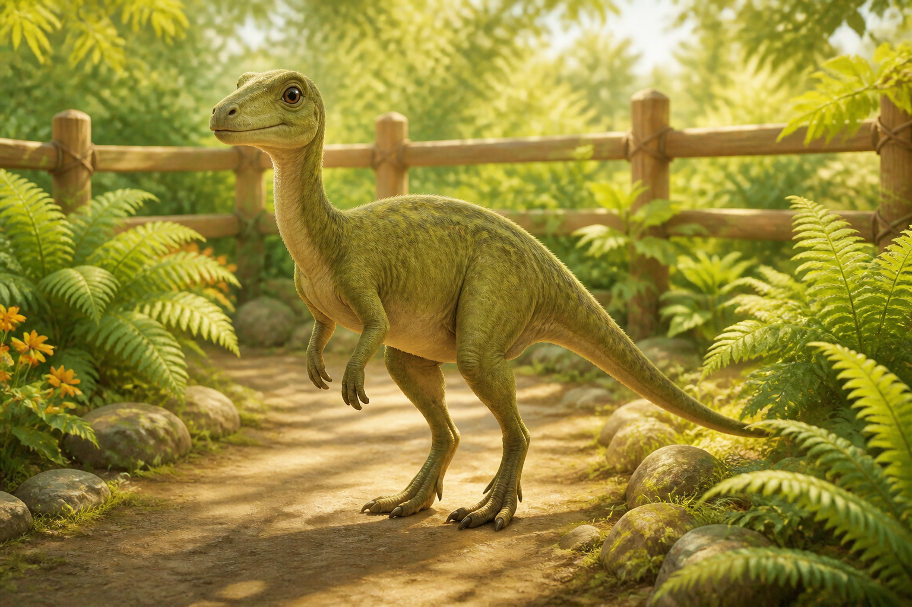
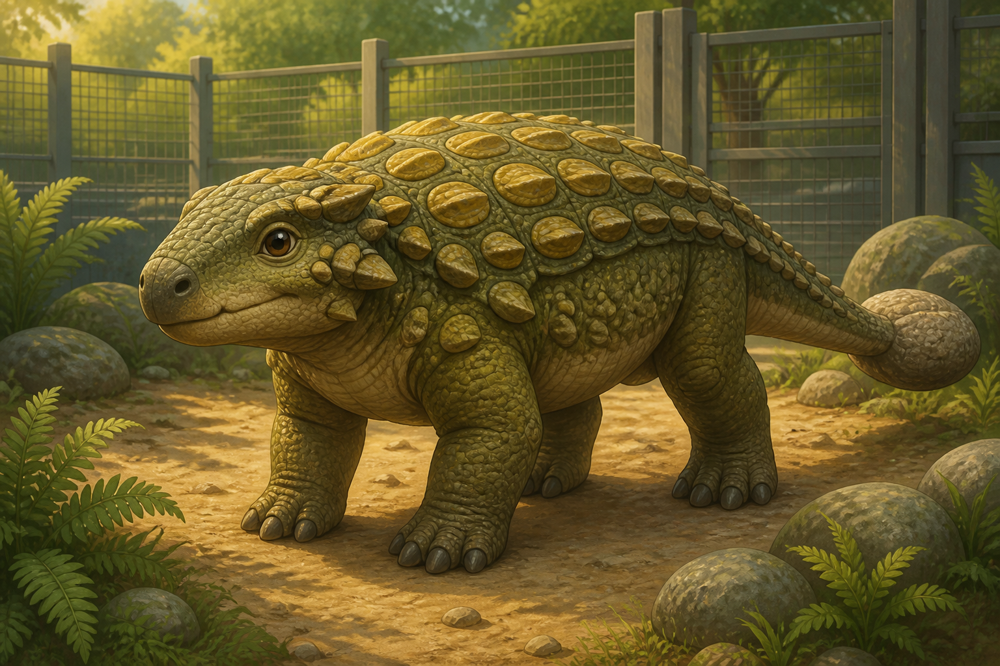
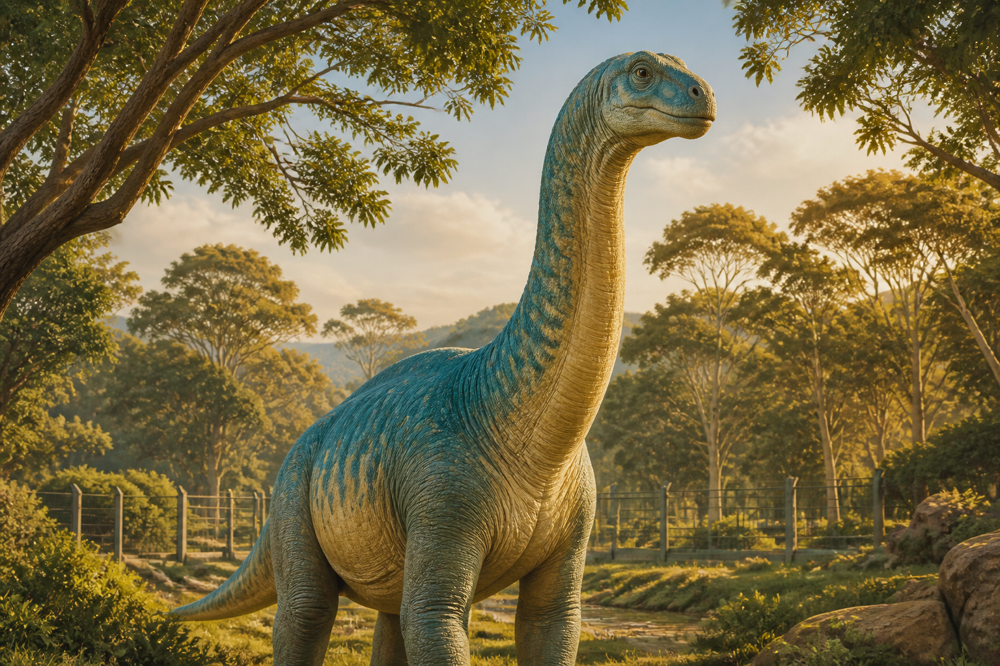

Small herbivore
Moss
Slow walker, loves shade, ideal for patient first-time adopters with quiet gardens.
Ask about MossFictional adoption list
Every dinosaur profile includes size, walking pace, preferred snacks, and household fit.

Slow walker, loves shade, ideal for patient first-time adopters with quiet gardens.
Ask about Moss
Confident, snack-focused, and happiest when given a predictable morning routine.
Ask about Juniper
Gentle but huge. Needs reinforced fencing, tree-safe browsing zones, and two handlers.
Ask about Atlas